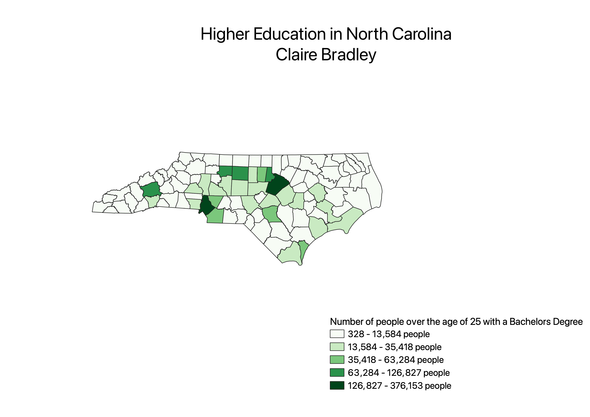

Homework 7: Census data choropleth
Claire Bradley
This map shows "total population 25+ with a bachelor's degree or higher" by county. I am intersted in this because North Carolina is a state that does not invest well in teachers as they are paid some of the lowest salaries for teachers in the nation. However, the instate universities are cheaper than many states and have high requirements for percentage of students they must take from in-state making it clear that higher education is a priority.

Data used for this project
CSV dataset
Link to shapefile